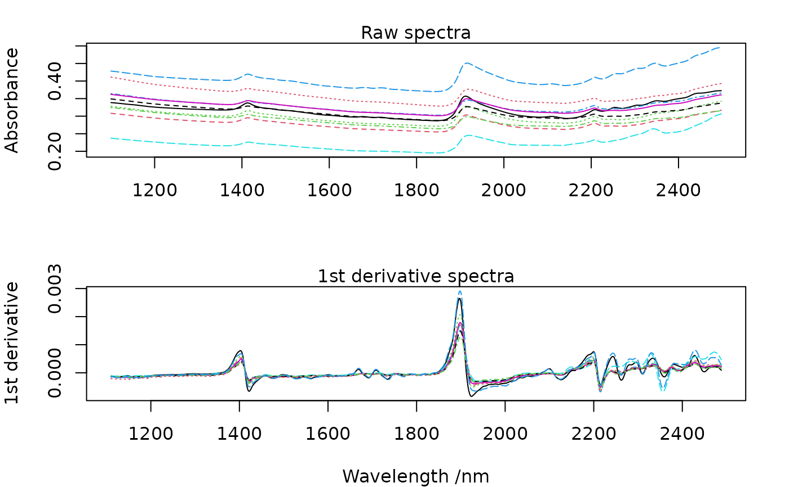

Savitzky-Golay smoothing and derivative of a data matrix or vector.
savitzkyGolay(X, m, p, w, delta.wav)a numeric matrix or vector to process (optionally a data frame that can be coerced to a numerical matrix).
an integer indicating the differentiation order.
an integer indicating the polynomial order.
an integer indicating the window size (must be odd).
(optional) sampling interval.
The Savitzky-Golay algorithm fits a local polynomial regression on the signal. It requires evenly spaced data points. Mathematically, it operates simply as a weighted sum over a given window:
\[ x_j\ast = \frac{1}{N}\sum_{h=-k}^{k}{c_hx_{j+h}}\]
where \(x_j\ast\) is the new value, \(N\) is a normalizing coefficient, \(k\) is the gap size on each side of \(j\) and \(c_h\) are pre-computed coefficients, that depends on the chosen polynomial order and degree.
The sampling interval specified with the delta.wav argument is used for
scaling and get numerically correct derivatives.
The convolution function is written in C++/Rcpp for faster computations.
Luo, J., Ying, K., He, P., & Bai, J. (2005). Properties of Savitzky–Golay digital differentiators. Digital Signal Processing, 15(2), 122-136.
Savitzky, A., and Golay, M.J.E., 1964. Smoothing and differentiation of data by simplified least squares procedures. Anal. Chem. 36, 1627-1639.
Schafer, R. W. (2011). What is a Savitzky-Golay filter? (lecture notes). IEEE Signal processing magazine, 28(4), 111-117.
Wentzell, P.D., and Brown, C.D., 2000. Signal processing in analytical chemistry. Encyclopedia of Analytical Chemistry, 9764-9800.
data(NIRsoil)
opar <- par(no.readonly = TRUE)
par(mfrow = c(2, 1), mar = c(4, 4, 2, 2))
# plot of the 10 first spectra
matplot(as.numeric(colnames(NIRsoil$spc)),
t(NIRsoil$spc[1:10, ]),
type = "l",
xlab = "",
ylab = "Absorbance"
)
mtext("Raw spectra")
NIRsoil$spc_sg <- savitzkyGolay(
X = NIRsoil$spc,
m = 1,
p = 3,
w = 11,
delta.wav = 2
)
matplot(as.numeric(colnames(NIRsoil$spc_sg)),
t(NIRsoil$spc_sg[1:10, ]),
type = "l",
xlab = "Wavelength /nm",
ylab = "1st derivative"
)
mtext("1st derivative spectra")

par(opar)